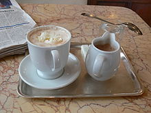

Čokolada
Čokolada
Čokoláda je potravina, ktorá sa vyrába z plodov kakaovníka a patrí medzi najpopulárnejšie sladkosti na svete.
Slovo čokoláda má pôvod v jazyku Nahuatlov, pôvodných obyvateľov stredného Mexika, kde sa kakaovník pestoval už pred tritisíc rokmi.
Je vyrábaná zo zrniek tropického kakaového stromu Theobroma cacao. Výsledný produkt je známy ako „čokoláda“ (intenzívne ochutená horká potravina). Tento produkt je v mnohých krajinách známy ako kakao. V americkom čokoládovom priemysle je kakao definované ako sušina kakaových zŕn, kakaové maslo je definované ako tukový komponent, a čokoláda je kombináciou sušiny a tuku. Tá je obvykle osladená cukrom a inými prísadami a spracovaná do čokoládových tabuliek (jadro ktorých je tiež označované ako čokoláda), alebo do nápoja (zvaného kakao alebo horká čokoláda).
Pri výrobe čokolády sa využívajú hlavne tri typy zŕn. Najviac cenené, vzácne a najdrahšie sú zrná Criollo, pochádzajúce z bývalých Mayských oblastí (Mexiko a stredná Amerika). Iba 10% z čokolády sa vyrába zo zŕn Criollo, ktoré sú menej horké a viacej aromatické oproti iným zrnám.
80% čokolády sa vyrába z kakaových zŕn druhu Forastero. Stromy Forastero sú omnoho robustnejšie oproti stromom Criollo, čo sa prejaví na cene kakaových zŕn. Trinitario, hybrid zŕn Criollo a Forastero, sa používa vo zvyšných 10 % čokolády.
Keď nie je čokoláda upravená do tvaru tabuliek alebo iných geometrických tvarov, často sa z nej formujú tvary figúriek (zvyčajne ľudí alebo zvierat) napr. zajaca alebo vajíčka ako Veľkonočná čokoláda, prípadne iné tvary na Vianoce, Sv. Mikuláša, prípadne deň Sv. Valentína. Čokoládová pusinka je ďalšia z obľúbených tvarov. Niekedy je čokoláda tvarovaná aj ako ruža.
Čokoláda sa často využíva ako hlavná zložka alebo prísada v potravinách ako je zmrzlina, koláče, keksy, buchty a iné dezerty.
Tabuľka udáva dlhodobo priemerný obsah živín, prvkov, vitamínov a ďalších nutričných parametrov zistených v čokoláde.
Priemerný obsah látok a minerálov
| Zložka | Jednotka | Priemerný obsah | Prvok (mg/100 g) | Priemerný obsah | Zložka (mg/100 g) | Priemerný obsah |
| voda | g/100 g | 0,2 | Na | 50 | vitamín C | stopy |
| bielkoviny | g/100 g | 4,1 | K | 390 | vitamín D | stopy |
| tuky | g/100 g | 37,6 | Na | 50 | vitamín C | stopy |
| cukry | g/100 g | 57,1 | Na | 50 | vitamín C | stopy |
| celkový dusík | g/100 g | 0,66 | Na | 50 | vitamín C | stopy |
| vláknina | g/100 g | - | Na | 50 | vitamín C | stopy |
| mastné kyseliny | g/100 g | - | Na | 50 | vitamín C | stopy |
| cholesterol | mg/100 g | 2 | Na | 50 | vitamín C | stopy |
| Se | mg/100 g | stopy | Na | 50 | vitamín C | stopy |
| energia | kJ/100 g | 2375 | Na | 50 | vitamín C | stopy |
Rôzne typy čokolády
Čokoláda je veľmi populárna potravina a je dostupná v mnohých variantoch.Čokoláda je veľmi populárna potravina a je dostupná v mnohých variantoch. Rôzne formy a chute čokolády sú vytvárané obmeňovaním množstva prísad.

Nesladená čokoláda: čistý čokoládový nápoj, rovnako známa aj ako horká čokoláda alebo čokoláda na varenie. Je to nemiešaná čokoláda a mleté pražené čokoládové zrná bez prísad dávajú silnú, hlbokú čokoládovú chuť všetkým sladkostiam, do ktorých sú pridané. I s pridaným cukrom sú používané ako základ vrstvových tort, koláčov, cukrovín, keksov a pod.
Tmavá čokoláda: čokoláda bez mlieka ako prísady, niekedy nazývaná ako obyčajná čokoláda. Oficiálne sa v USA nazýva „Sladká čokoláda“ a vyžaduje 15% koncentrácií čokoládového moku. Európske normy špecifikujú minimálne 35 % kakaovej sušiny.
Couverture: termín používaný pre čokolády obsahujúce mnoho kakaového masla najvyššej kvality. Populárny druh čokolády Couverture používaný aj profesionálnymi cukrármi a často predávaný v gurmánskych a špeciálnych obchodoch s potravinami. Obsahuje súčasti: Valrhona, Lindt, Coco Barry a Esprit des Alpes. Tieto čokolády obsahujú vysoké percento čokoládového moku (niekedy viac než 70 %) práve ako kakaové maslo, aspoň 32 - 39 %, sú veľmi tekuté po roztopení a majú výbornú chuť.
Mliečna čokoláda: čokoláda s prídavkom kondenzovaného alebo sušeného mlieka. Predpisy EÚ vyžadujú v mliečnej čokoláde zastúpenie najmenej 35% pevných zložiek kakaa.
Biela čokoláda:
cukrárenský výrobok založený na kakaovom masle bez pevných kakaových zložiek.
Ľadová čokoláda:
Druh čokolády, ktorý je nutné pred konzumáciou zachladiť aspoň na teplotu cca 5 °C.
Čokoládové náhrady
V obchodoch sú výrobky, ktoré na prvý pohľad vyzerajú ako čokoládové, ale v skutočnosti ide o rôzne náhrady čokolád. Často sú to rôzne vianočné a veľkonočné figúrky. Spotrebiteľ by mal kvôli tomuto sledovať obal, či ide o skutočný výrobok z čokolády.
Čokoládové náhrady
V obchodoch sú výrobky, ktoré na prvý pohľad vyzerajú ako čokoládové, ale v skutočnosti ide o rôzne náhrady čokolád. Často sú to rôzne vianočné a veľkonočné figúrky. Spotrebiteľ by mal kvôli tomuto sledovať obal, či ide o skutočný výrobok z čokolády.
Rôzne typy čokolády
Skupina vedcov pod vedením doktora Normana Hollenberga z Harvardovej univerzity totiž zistila, že kakao je unikátna potravina, ktorá dokáže pozitívne vplývať na krvný tlak, a preto sa odporúča na prevenciu, ako aj liečbu hypertenzie.
Výskum sa sústredil na obyvateľov súostrovia San Blas v Paname, Indiánov z kmeňa Kuna, u ktorých sa nezistili problémy s krvným tlakom, všetci ho mali v normále a tešili sa pevnému zdraviu. Ich príbuzní, ktorí sa pred časom presťahovali do hlavného mesta, boli nútení zmeniť stravovacie návyky a prispôsobiť ich životu vo veľkomeste. Začali mať problémy s krvným tlakom, ktorý mal tendenciu sa zvyšovať. Hollenberg a jeho spolupracovníci sa rozhodli hľadať príčinu. V rodnej osade Indiáni bežne konzumovali kakaové bôby, plody bohaté na flavonoidy. Výskumy potvrdili, že práve táto látka obsiahnutá v kakau a teda aj v tmavej čokoláde napomáha udržiavať krvný tlak v normále.
Toto zistenie zaujalo talianskych vedcov natoľko, že sa rozhodli overiť si ho v praxi. Dvadsať pacientov trpiacich hypertenziou po dobu pätnástich dní konzumovalo pod lekárskym dohľadom primerané množstvo čokolády. Následne bol u všetkých zaznamenaný nielen znížený krvný tlak, ale aj pokles hladiny cholesterolu v krvi. Podobný výskum sa následne konal aj v USA. Americkí vedci zistili, že ľudia, ktorí si pochutnávajú na kakaových sladkostiach, žijú v priemere o rok dlhšie ako tí, ktorí tak nečinia. Chuť a vôňa celosvetovo obľúbenej tmavej lahôdky má priaznivé účinky aj na psychiku. Ako aj pri konzumácii ostatných, energeticky bohatých potravín platí, že nadmerné požívanie čokolády vedie k nežiaducej nadváhe, či dokonca obezite. Zároveň treba spomenúť i fakt, že zdraviu prospešné účinky má len čokoláda, v ktorej zložení nechýba kakaové maslo. A práve táto ingrediencia chýba v menej kvalitnej čokoláde.
Literatúra
- Stephen T. Beckett: Industrial chocolate manufacture and use. Blackwell Science, Oxford ; Malden, MA 1999, ISBN 978-0-632-05433-6
- Sophie D. Coe, Michael D. Coe: The True History of Chocolate. Thames & Hudson, New York NY 2004, ISBN 0-500-28229-3
- Teresa L. Dillinger u. a.: Food of the Gods. Cure for Humanity?. A Cultural History of the Medicinal and Ritual Use of Chocolate. 2000
- Frédéric Bau (dir.), Encyclopédie du chocolat, Flammarion, 6 octobre 2010, 415 p. (ISBN 978-2-08-123724-7)
- Henry Stubbe: The Indian Nectar or a Discourse Concerning Chocolata. The Nature of the Cacao-Nut and the Other Ingredients of that Composition Is Examined and Stated According to the Judgement and Experience of Indian and Spanish Writers. J. C. for Andrew Crook, London 1662